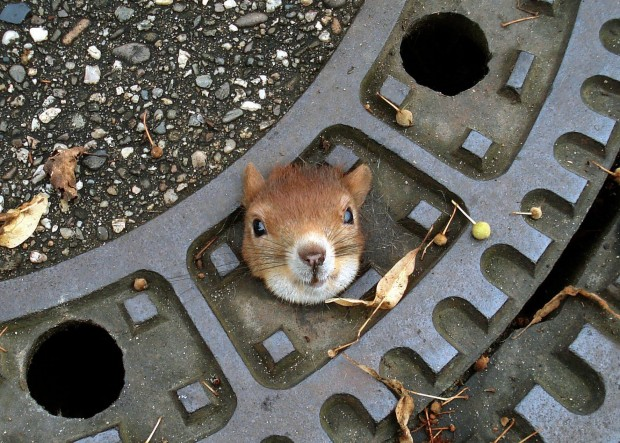

The epedemic of overweight squirrels
Feeling sluggish? Need to shake the squirrel kit weight? Can't help yourself when the lady down the block tosses her leftover Cashews? You thought nut fat was "good fat"? Are you a fat squirrel?
That's OKAY! We still love you. But if you're feeling sluggish, we want to help you find a way to live your "Best Life." (Thanks Oprah. You're our hero.) Feel free to use your tiny paws to navigate through this website. You'll learn that we're all on your side. Humans and Squirrels standing together, hand in paw.